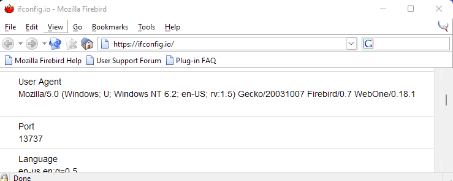
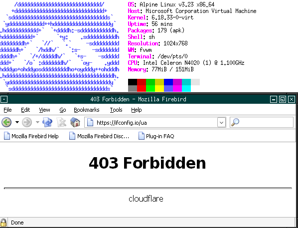
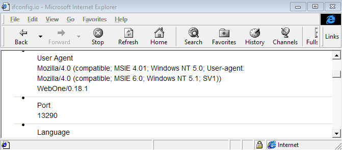
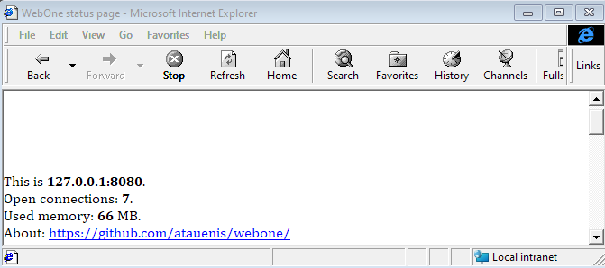
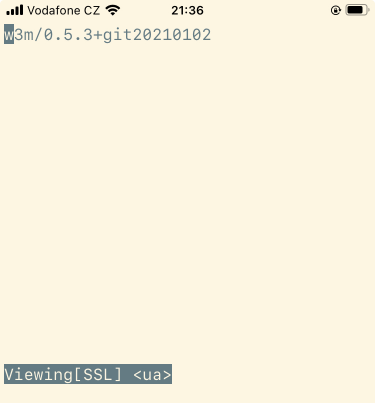

Here are some unusual web browser screenshots.
this is Mozilla Firebird which later became Mozilla Firefox, on Windows 11.
This was a really fast and lightweight browser at the time.

One more Mozilla Firebird. Running on current Linux through Wine.

Internet Explorer 4.0 running on Windows 11 in Windows XP SP2 compatibility
mode.

One more screesnhot of IE4 on win 11. In the lower right corner you can see
it using Win-11 style icon for Intranet Zone.

w3m text browser running on Iphone through ish.app. This is as close as it
gets without jaibreaking.
